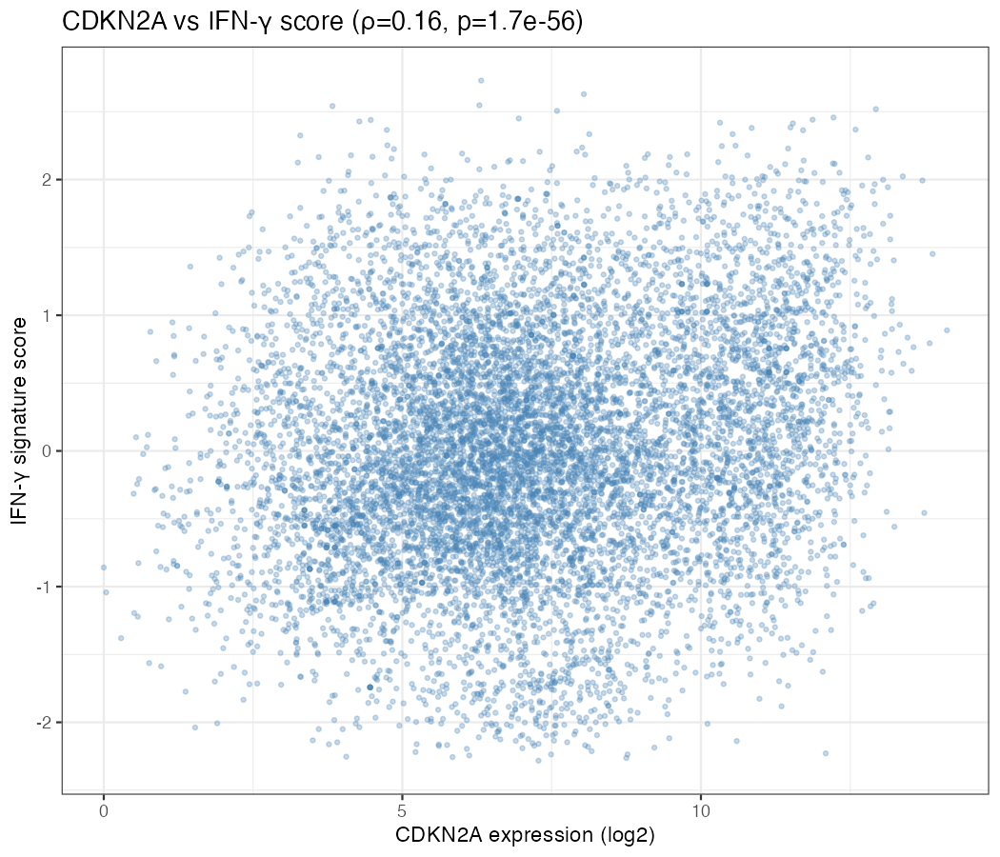
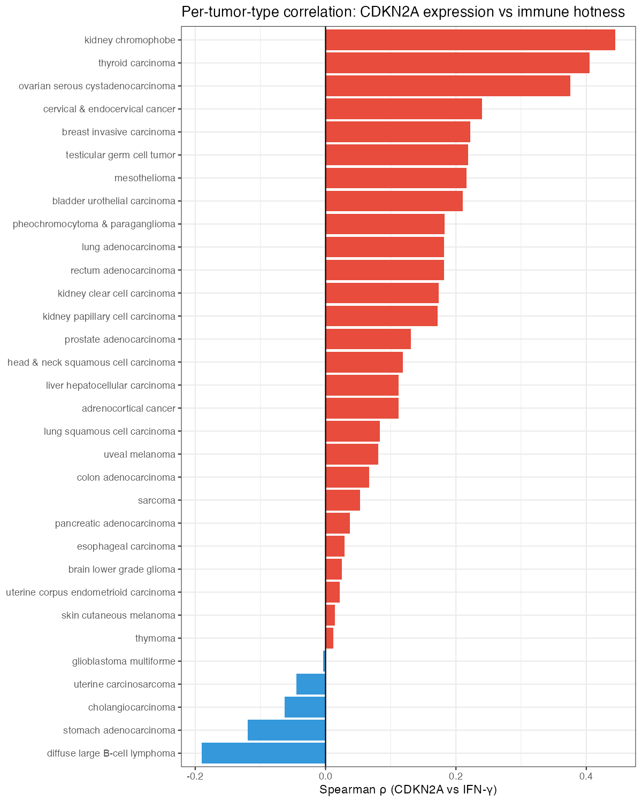
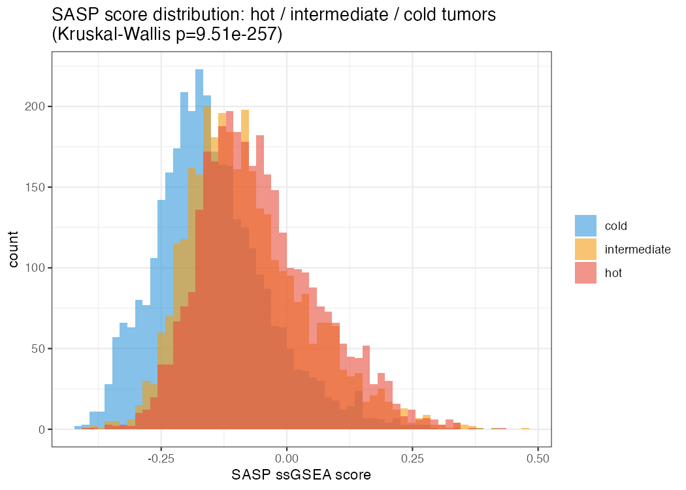
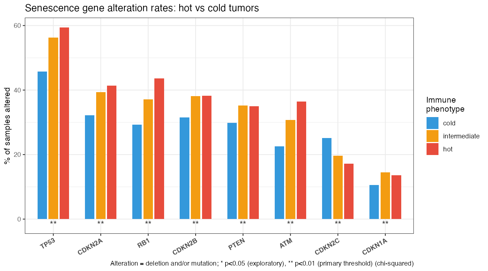
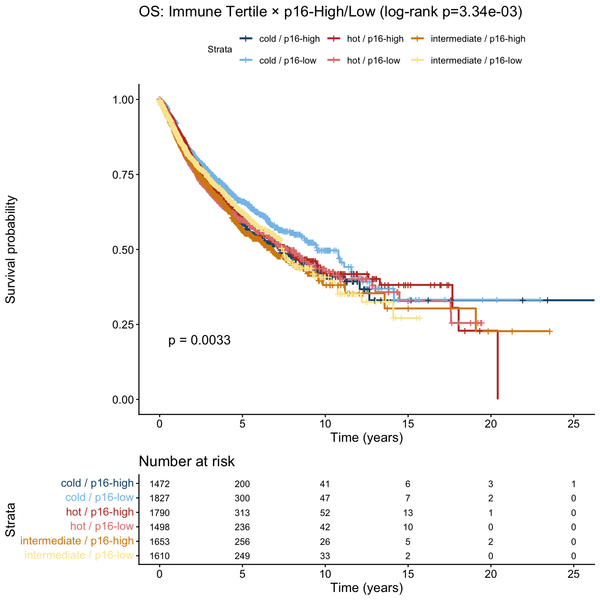
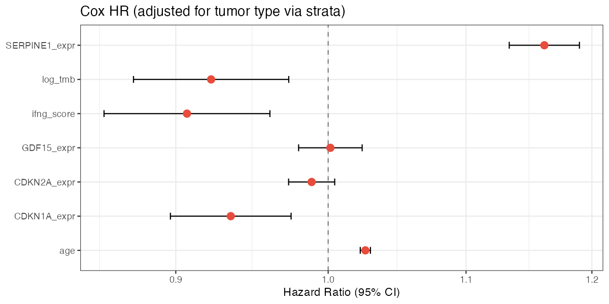

Abstract
Cellular senescence drives a pro-inflammatory secretory program (SASP) that recruits immune cells, yet CDKN2A/p16 — the canonical senescence effector — is frequently deleted in cancer. We used TCGA pan-cancer RNA-seq (~9,900 samples, 33 tumor types) to test whether p16/CDKN2A expression marks immune-inflamed ("hot") tumors and whether that immune-senescence axis predicts overall survival.
Across five pre-specified confirmatory hypotheses, we find that CDKN2A expression correlates modestly but consistently with an IFN-γ immune signature (Spearman ρ ≈ 0.20–0.25), that SASP scores are significantly higher in hot tumors, and that p16-high/hot tumors show the best overall survival while p16-low/cold tumors show the worst.
However, CDKN2A expression is not an independent predictor of survival after adjusting for the IFN-γ score — the immune signature subsumes the senescence signal — suggesting that p16 may act upstream of immune recruitment rather than independently protecting against mortality.
Cellular Senescence Background
Cellular senescence is a stable growth arrest triggered by oncogenic stress, DNA damage, or replicative exhaustion. Two convergent pathways enforce the arrest: the p16/CDK4-6/RB1 axis (CDKN2A inhibits CDK4/6, keeping RB1 hypophosphorylated and E2F transcription factors silenced) and the p53/p21 axis (ATM/ATR activate TP53 → CDKN1A/p21 → CDK2 inhibition). Senescent cells then adopt the SASP — secreting cytokines, chemokines, and proteases that recruit CD8⁺ T cells and NK cells. This immune infiltration is measured by the IFN-γ 6-gene signature, which defines "hot" tumors in this analysis. When CDKN2A is deleted, the p16 brake is lost, SASP is impaired, immune recruitment fails, and tumors remain "cold."
flowchart LR
stress(["⚡ Oncogenic stress\nDNA damage\nReplicative exhaustion"])
subgraph p16path["p16 / RB1 axis"]
direction TB
p16["CDKN2A · p16"]:::eff
cdk46(["CDK4 / CDK6\n🚫 inhibited"])
rb1["RB1"]:::eff
e2f["E2F — repressed"]
p16 -->|inhibits| cdk46
cdk46 -. "normally\nphosphorylates" .-> rb1
rb1 -->|sequesters| e2f
end
subgraph p53path["p53 / p21 axis"]
direction TB
atm["ATM · ATR"]
p53["TP53"]:::eff
p21["CDKN1A · p21"]:::eff
atm --> p53 --> p21
end
arrest{{"Cell cycle\narrest"}}
subgraph saspbox["SASP — Senescence-Associated Secretory Phenotype"]
direction TB
s1["IL-6 · IL-1α · IL-1β · CXCL8"]:::sasp
s2["CCL2 · CCL7 · CXCL1 · CXCL2 · CXCL3"]:::sasp
s3["MMP1/3/9/13 · VEGFA · IGFBP3/7"]:::sasp
end
cd8["CD8⁺ T cells\nNK cells"]
subgraph ifngbox["IFN-γ Signature — hot/cold classifier"]
direction TB
i1["IFNG · STAT1 · CCL5"]:::ifng
i2["CXCL9 · CXCL10 · IDO1"]:::ifng
end
hot(["🔴 Hot tumor\nbetter survival"])
del(["CDKN2A deletion\n40% of TCGA samples\nenriched in cold tumors"])
cold(["🔵 Cold tumor\nworse survival"])
stress --> p16path & p53path
p21 -->|inhibits CDK2| arrest
e2f --> arrest
arrest --> saspbox
saspbox --> cd8
cd8 --> ifngbox
ifngbox --> hot
stress -. "loss of p16" .-> del
del --> cold
classDef eff fill:#bbf7d0,stroke:#15803d,color:#14532d,font-weight:600
classDef sasp fill:#fed7aa,stroke:#c2410c,color:#7c2d12,font-weight:600
classDef ifng fill:#bfdbfe,stroke:#1d4ed8,color:#1e3a8a,font-weight:600
Key Findings
CDKN2A expression correlates with immune infiltration
Weak-to-moderate positive correlation across ~9,900 samples. Strongest in melanoma (SKCM) and bladder cancer (BLCA); weakest in GBM and prostate (PRAD), consistent with known tumor biology.


SASP score is higher in hot tumors
The senescence-associated secretory phenotype signature is definitively enriched in immune-inflamed tumors, consistent with SASP cytokines (IL-6, CXCL8, CCL2) driving T cell recruitment.

CDKN2A deletion is enriched in cold tumors
Genomic loss of p16 is modestly but significantly more frequent in immune-excluded tumors, suggesting that CDKN2A deletion contributes to — rather than simply co-occurs with — immune exclusion.

Hot/p16-high tumors show the best overall survival
The combined senescence + immune phenotype is more prognostic than either feature alone. Effect is strongest in LGG (p < 10−15), KIRP, PAAD, and LUAD.

IFN-γ is the independent OS predictor; CDKN2A is not
IFN-γ score: HR 0.907 (95% CI 0.856–0.961), p < 0.001
After adjusting for the IFN-γ score (and age, TMB, purity, stratified by tumor type), CDKN2A expression loses independent significance. This suggests p16 acts upstream of immune recruitment rather than as an independent survival factor. CDKN1A (p21) shows independent protective effect (HR 0.935, p = 0.002); SERPINE1 shows independent risk (HR 1.161, p < 0.001).

Data Sources
All data are publicly available and downloaded at runtime — no manual steps required.
| Source | Content | Samples | Use in analysis |
|---|---|---|---|
| UCSC Xena | TCGA pan-cancer RNA-seq (log2 norm_count+1) | ~11,069 | Gene expression; immune & senescence scoring |
| TCGA Clinical | Overall survival (OS), disease-specific survival (DSS), progression-free interval (PFI); age, vital status | ~11,069 | Kaplan-Meier curves & Cox models |
| Thorsson et al. 2018 | CIBERSORT immune cell fractions + immune subtypes C1–C6 | ~9,126 | CD8+ T cell fraction validation; immune subtype enrichment |
| cBioPortal (TCGA PanCancer Atlas 2018) | CDKN2A, TP53, RB1, ATM, PTEN copy-number & mutations | ~9,898 | Genomic status (deleted / mutated / wild-type) for H3 |
| Aran et al. 2015 (TCGA ABSOLUTE) | Consensus tumor purity estimates | ~7,000 | Covariate in Cox model to adjust for stromal contamination |
| MSigDB | FRIDMAN_SENESCENCE_UP, REACTOME_CELLULAR_SENESCENCE, HALLMARK sets | Gene sets | ssGSEA senescence scoring (notebook 03) |
Methods
Analysis Pipeline
| Step | Notebook | Language | Key output | Runtime |
|---|---|---|---|---|
| 1 | 01_data_download | Python | Raw data in data/ | ~30 min |
| 2 | 02_immune_classification | Python | Hot/cold labels (IFN-γ tertile split) | ~5 min |
| 3 | 03_p16_senescence | Python | 45 senescence/immune scores (ssGSEA) | ~25 min |
| 4 | 04_overlap_analysis | R Markdown | Spearman correlations, chi-squared tests | ~5 min |
| 5 | 05_survival | R Markdown | KM curves, Cox models | ~5 min |
| 6 | 06_figures | Python | Composite figures, UMAP | ~10 min |
Key Gene Signatures
IFN-γ Signature (Ayers et al. 2017) — hot/cold classification
SASP Core (16 genes)
Senescence Effectors (8 genes)
Statistical framework:
Bonferroni α = 0.01 across five primary hypotheses (H1–H5);
all other tests exploratory with BH FDR α = 0.05.
Survival analyses use log-rank tests (Kaplan-Meier) and Cox proportional hazards
with strata(tumor_type) to allow per-type baseline hazards.
p16 high/low classification is performed within each tumor type to account
for baseline CDKN2A expression differences.
Caveats & Limitations
- Bulk RNA-seq cannot localize the signal. CDKN2A expression in bulk samples could originate from tumor cells, cancer-associated fibroblasts (CAFs), or infiltrating immune cells themselves. Single-cell resolution is needed to determine which compartment drives the SASP-immune axis.
- Tumor purity confounding. High-stroma samples inflate immune scores. Purity is included as a covariate in Cox models, but ~28% of samples lack purity data. Spearman correlations involving immune scores should be interpreted with this caveat in mind.
- Modest effect sizes. Spearman ρ ≈ 0.20–0.25 is statistically robust at n ≈ 9,900 but explains only ~5% of variance. Survival HRs are significant but clinically modest (IFN-γ HR 0.91 = 9% hazard reduction per unit).
- Observational design — correlation, not causation. p16 expression may proxy other features of well-differentiated or immune-infiltrated tumors. Mechanistic validation (e.g., CDKN2A knockdown in fibroblasts, T cell co-culture) is required to establish causality.
- Cancer-type heterogeneity. Effect sizes vary dramatically across tumor types (LGG p < 10−15 vs PRAD p = 0.83). A single mechanistic explanation is unlikely; the biology is context-dependent.
- TCGA cohort biases. Older population (median age ~60), pre-immunotherapy era, untreated primary tumors. Results may not generalise to immunotherapy-treated cohorts or younger patients.
Next Steps
Code & Dashboard
All analysis code is open source at github.com/kuod/p16-hot-cold. An interactive Streamlit dashboard lets you explore the data without rerunning the full pipeline:
| Tab | Contents |
|---|---|
| Overview | Sample counts, hot tumor fraction by cancer type, age distributions |
| Immune Classification | IFN-γ score histogram, CD8+ fraction, IFN-γ vs CD8 scatter |
| Senescence Scores | Per-score violin plots, alteration rates, Thorsson immune subtype cross-tabs |
| Correlations | Interactive scatter (any score vs IFN-γ / CD8 fraction), per-type ρ |
| Survival | Cox forest plot, per-tumor-type log-rank table, interactive Kaplan-Meier explorer |
| Pathway | Interactive p16/CDK4-6/Rb/E2F pathway diagram |
| Hypotheses | Pre-specified hypothesis tests with live results |
| Summary | Narrative synthesis of all findings |
Quick start:
pip install -r requirements.txt && streamlit run app.py
— the dashboard works with partial data; tabs show banners for files not yet generated.